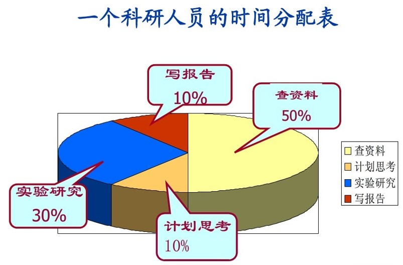
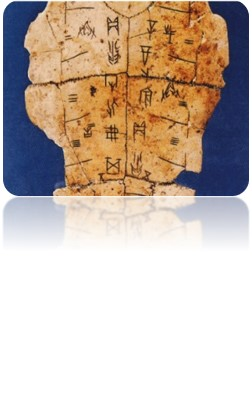
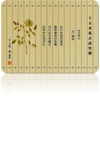

主页
课程资料
登录
为什么要学习文献检索？
矿图简介
基础知识
计算机检索语言
快速参考
你能解决的问题
对科研人员的帮助
文献检索课简介
返回顶部
你能解决的问题
我要写毕业论文了，需要参考一些中、外文资料，这些资料该去哪儿找？
我想报考某学校某位导师的研究生，想知道这个教授的研究方向和内容，需要阅读该教授近几年来发表的论文，怎样才能看到这些文章呢？
众多的文献如何进行有效的管理与利用呢？
毕业以后需要写论文评职称，如何在网络上查找网络免费学术资源呢？
对科研人员的帮助
在科学研究的过程中，第一步就是文献检索和阅读，分析现有的研究结果，从而发现问题，提出假说。
信息检索与文献阅读是一切科学研究的入口！
科研人员最大的痛苦莫过于没有 idea ！

文献检索课简介


文献信息检索课是国家教委统一命名的一门科学方法课。
社会的进步是一部信息储存和传播方式变革的历史，人类社会不断发展，传递信息的媒介也不断变化。
“工欲善其事必先利其器”，我们有必要学习从文献信息中获取所需知识和情报的方法。
© 07192329WCL
中国矿业大学图书馆